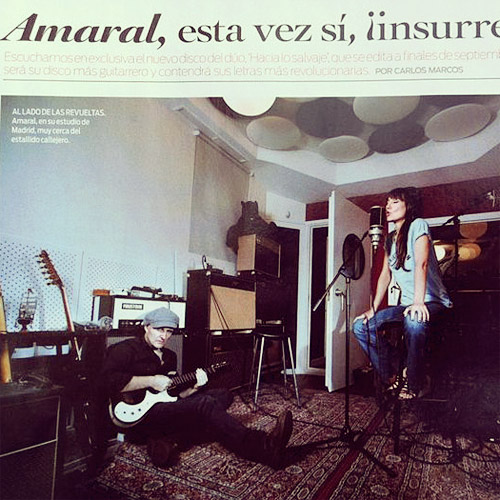
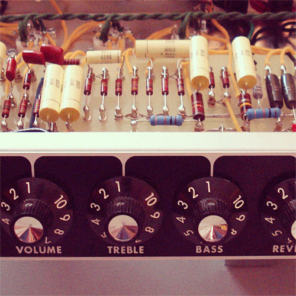
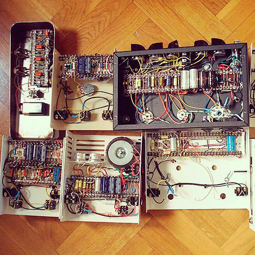

Faustone
Other projects
Faustone AG–30
The Faustone AG30 is a one-off amplifier I built for Juan Aguirre, the guitar player in Amaral —pictured here in their Madrid recording studio in Rolling Stone magazine, the first and only time Faustone has appeared in printed media—. The AG30 amp model name came to me one day I was feeling inspired; it is made up of the two first letters of his surname and, you guessed it, the Vox AC30 name.
The AG30 is, simply said, a Vox AC30 clone in a head format, DC30 Matchless style.
The DC30 circuit is a clever way of mixing in one amp the two classic eras of the original JMI Vox AC30s: the 1959 AC30/4 —EF86 preamp— and the 1964 AC30/6 —ECC83 preamp with added Top Boost EQ—.
Matchless improved the original EF86 channel by adding a 6-way tone switch that selects different coupling capacitors for different voicings. This soon became a boutique standard that everybody adopted, and my Dirty Teen is no exception. The ECC83 Top Boost channel is wired with the two triodes in parallel, which gives a fuller, fatter sound. Each preamp channel is then fed directly into one half of the phase inverter. The classic Vox 4xEL84 cathode-biased power amp with ‘Cut’ control and a switchable Master Volume pot completes the picture.
For the AG30 I used the same quality components I use on the Dirty Teen: a fantastic sounding set of TDS transformers, 2W PEC potentiometes, Sozo capacitors, carbon composition resistors, etc. As a bonus, I threw in a set of NOS tubes: General Electric EL84s, Telefunken EF86, Dynaco ECC83s and a pair of Amperex GZ32 in parallel as rectifiers.
Juan's AG30 and Jaime García Soriano's Dirty Teen made their way into Amaral's setup for their Hacia lo salvaje tour, which makes me really really proud. How do the amplifiers sound? Glad you asked. Below a live TV appearance. Faustone sound all the way!!!
Black panel AB763 Deluxe Reverb clones
I have built many tweed and black panel clones over the years: Deluxe Reverbs, Super Reverbs, Vibroverbs, you name it. I also completely refurbished the very first decent amp I owned, a Master Volume silver panel Twin Reverb that caught fire on stage. When I was younger, I even dared to write a step-by-step tutorial on how to build a Tweed Deluxe amp from scratch for my friends at Pisotones.com (in Spanish).
The two Deluxe Reverbs presented here were put together as a project for the Guitarrista.com forum. Both amps share the same classic pre-CBS Fender AB763 circuit. “AB763” is a Fender production code. The first two letters refer to the schematic revision, “7” stands for “July” and “63” stands for “1963”. It has no meaning out of the spec sheets, but cultivated guitar players (ahem) use it as a synonym for black panel amps, just as 5F6A means tweed Bassman or 5E3 means tweed Deluxe.
{kind=link}
Trying to be faithful to the originals, I built these on replica chassis with a set of Mercury Magnetics transformers, cloth wire, carbon composition resistors and Sprague electrolytics. I also used the mustard replica Sozo capacitors not for historic accuracy but because they sound great and look shiny and classy.
In one of the amps, I used a Hoffman style board, just for the sake of it. If you're interested in amp building like myself, you should definitely check out the Hoffman library of information for all your Fender needs.
Tube pedal experiments and prototypes
I call the summer of 2010 “The summer of prototypes”. I spent countless hours building different stompboxes, trying to broaden my pedal range, while at the same time completely revamping the MKI Valve Klipper.
Some of these contraptions sounded acceptable, others sounded just plain awful. In any case, none of them made it into production.
The American Stinger was my take on the Garnet Herzog, which is a Champ–type amp you can plug directly into another amp, and famously featured in American Woman by The Guess Who. I wanted to combine the Herzog with the Stinger circuit present on bigger Garnet amps that uses a 6AN8 tube. I built it and it sounded good but I couldn't tame it without ruining the sound, it had way too much gain when plugged into another amp. For some reason I didn't investigate it any further but this is actually a good idea for a guitar gizmo, if you see it elsewhere you heard it here first.
The Valve Booster was a Valve Klipper without the Klipp circuit and a different power supply. It didn't do anything that the Valve Klipper couldn't do, it would have been an expensive box so it was discarded.
The Trem-Kept-A-Rollin’ was the working title for a Valve Booster circuit with tremolo, and the first of the hybrid tube/transitor pedals I put together.
I built El Tubo as an attempt to make a hybrid tube/transitor fuzz. This was like the ugly son of the Fuzz Unit and the Valve Klipper. Two back-to-back 9V transformers supplied the juice for both parts of the circuit. The sound was decent but nothing to write home about, and the wiring was too intrincate for production. I have many of these 9V transformers available if you're interested.
The Gemini was a personalized build for a customer in NJ, USA. It was based on the ’65 Ampeg Gemini preamp and it actually sounded pretty good.